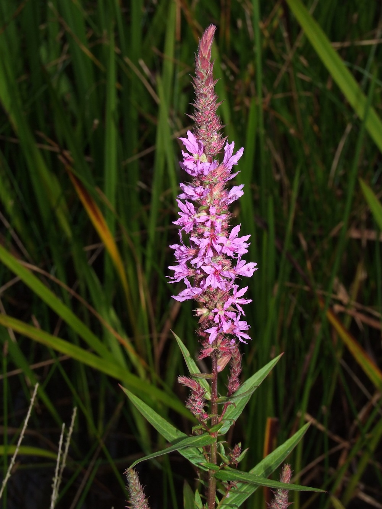
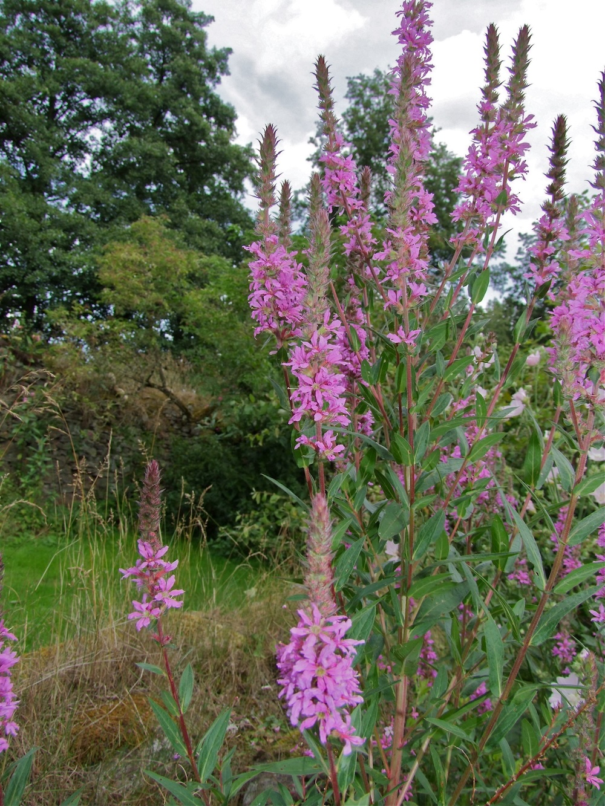

Drei verschiedene Blütenformen
Der Blut-Weiderich ist berühmt für eine botanische Eigenheit: Es gibt drei genetisch verschiedene Blütentypen mit Stempel- und Staubblättern in unterschiedlichen Längenverhältnissen („Tristyle"). Bestäubung gelingt nur, wenn Pollen von einem Typ auf eine Narbe in der entsprechenden Position trifft. Charles Darwin war von diesem System fasziniert und hat es ausführlich beschrieben — ein eleganter Mechanismus zur Vermeidung von Selbstbestäubung.
Lebensraum-Bauer
Mit seinen langen Blütenähren steht der Blut-Weiderich im Hochsommer wie eine rote Kerze in feuchten Senken, an Bachufern und Auenwiesen. Er ist eine wertvolle Nektarpflanze für Schmetterlinge und gleichzeitig wichtige Brutpflanze für mehrere Käferarten. In ungeschnittenen Feuchtgebieten bildet er oft große Bestände — ein Hinweis auf intaktes Wassersystem.